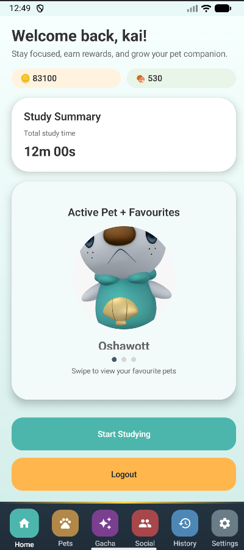
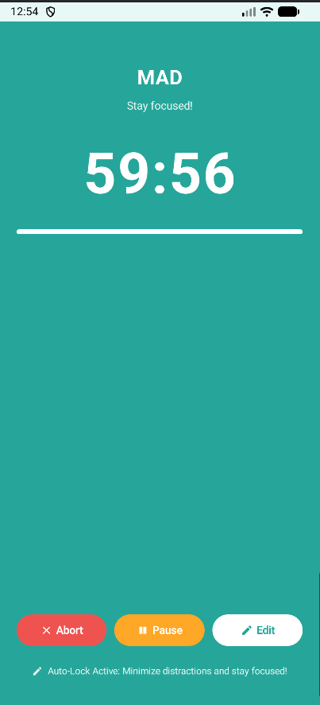
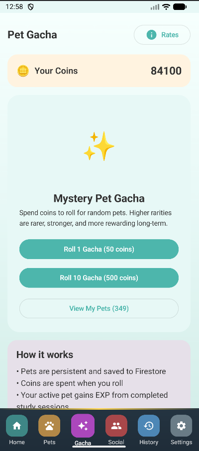
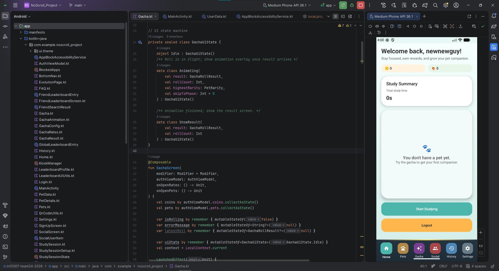

Team project · SIT
NoScroll
Stop scrolling and start focusing! A gamified focus timer that blocks distracting apps.



Overview
NoScroll is an Android app that helps students stay off their phones while studying. You start a focus session, distracting apps are blocked while the timer runs, and finishing sessions earns coins and experience for a virtual pet companion.
It was built by a team of six as a university project, using Kotlin with Jetpack Compose for the UI and Firebase for accounts and data.
What I worked on
- Key screens and flows: registration fields, FAQ, study-session setup, and the home screen with pet display and navigation.
- Pet gacha mechanics, including the roll result presentation and animation.
- Leaderboard display for the social features.
- Integrating my parts with the rest of the team’s work.
Development
The gacha screen is driven by a small UI state machine (idle, animating, showing result), which kept the roll animation and result screen easy to reason about.
